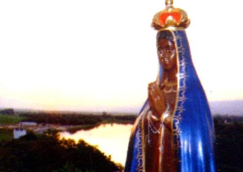
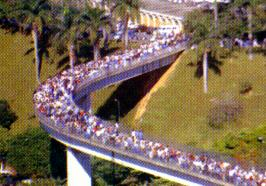
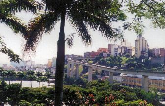
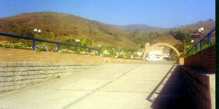

 GOVERNADOR DA CAPITANIA
- Dom Pedro Miguel de Almeida
Portugal e Vasconcelos, era um homem de poucas palavras e muito
religioso, e também pertencia a uma das mais ilustres
famílias do Reino Português, tendo realizado em ocasiões
diferentes, diversos serviços para o seu país, na Europa e nas
Colônias Portuguesas de Ultramar.
GOVERNADOR DA CAPITANIA
- Dom Pedro Miguel de Almeida
Portugal e Vasconcelos, era um homem de poucas palavras e muito
religioso, e também pertencia a uma das mais ilustres
famílias do Reino Português, tendo realizado em ocasiões
diferentes, diversos serviços para o seu país, na Europa e nas
Colônias Portuguesas de Ultramar.
Nasceu em 1688,
estudou artes militares e estreou muito jovem na carreira das armas, lutando
na guerra de sucessão na Espanha e depois, foi encarregado de
trazer de retorno à Portugal, a tropa militar Portuguesa,
durante o armistício que antecedeu a assinatura do tratado de
Utrech.
Em 1716 concorreu
com mais oito candidatos, atendendo ao convite da Coroa Portuguesa, para
provimento do cargo de Governador e Capitão Geral da Capitania
de São Vicente, no Brasil, cuja área abrangia os atuais
Estados de São Paulo e Minas Gerais. Venceu o concurso por suas
inegáveis e admiráveis qualidades. Em 22 de Dezembro de 1716,
por despacho do Rei de Portugal, Dom João V, foi nomeado para o
posto, sendo o terceiro Governador na história da Capitania.
Além do título
de Conde de Assumar, possuía outros: Comendador da Ordem de São
Cosme e Damião de Azere, Comendador da Ordem de Cristo do Conselho
de Sua Majestade, Vice-Rei das Índias, Marquês de Caste o Novo e
de Alorna, Sargento Mor de Batalha de seus Exércitos.
Antes de terminar
o seu mandato governamental de 4 anos na Capitania de São Vicente, no
ano de 1720 desmembrou sua Capitania em duas, por causa da grandeza
do território, separando São Paulo de Minas Gerais, justamente
definindo as áreas que hoje são ocupadas pelos dois Estados.
O Conde embarcou
em Lisboa para o Brasil, chegando ao Rio de Janeiro em Junho de 1717.
No mês de Agosto
seguiu de navio para Santos, fazendo escala em Parati, onde deixou sua
bagagem, que foi transportada por terra para a Vila de
Guaratinguetá. De Santos viajou para São Paulo, a fim de tomar
posse na sede da Capitania, onde chegou no dia 4 de Setembro.
No dia 8 de Setembro,
dedicado a celebração da Natividade de NOSSA SENHORA, mandou um
emissário levar às Minas, a Certidão de sua posse.
VIAGEM ÀS MINAS - A Revista do Serviço do Patrimônio Histórico
e Artístico Nacional, nº 3, de 1939, publicou nas páginas 295 a 316, o Diário
completo da jornada feita por Dom 
Pedro de Almeida, desde o Rio de
Janeiro até São Paulo, e desta cidade até as Minas em Ouro Preto e Mariana,
no ano de 1717, um precioso documento descoberto
no Arquivo do Governo Português, em Lisboa.
No dia 26
de Setembro de 1717, mandou outro emissário às Minas, para avisar
a todos administradores de sua próxima visita. A viagem tinha
como objetivo primordial conhecer e verificar as condições de
trabalho nas Minas de Ribeirão do Carmo, hoje cidade de Mariana,
nas Minas de São João Del Rei e de Vila Rica de Ouro Preto.
No dia seguinte,
saiu de São Paulo e rumou em direção ao Vale Paraíba, parando primeiro
em Mogi 
das Cruzes, depois em Jacareí, Caçapava, Taubaté,
Pindamonhangaba, chegando à Vila de Guaratinguetá no dia 17 de
Outubro e lá permaneceu até o dia 30, esperando por sua bagagem
que havia deixado em Parati para ser enviada à Guaratinguetá em
tropa de animais, onde só chegou no dia 28.
VEREADORES PREPARAM UM
BANQUETE - Aqui,
é particularmente importante fixarmos esta data de 17 de Outubro de 1717,
porque existia dúvidas sobre a data exata da chegada de Sua Excelência,
o Governador da Capitania, a Guaratinguetá. A mencionada Revista
do Patrimônio Histórico e Artístico Nacional, publicando o
Diário completo da viagem, eliminou definitivamente todas
as controvérsias sobre a data.
Na véspera,
a Câmara Municipal contratou diversos pescadores para trazerem uma
boa quantidade de peixes, que seriam preparados para o banquete,
que foi elaborado com todo o requinte, objetivando
agradar
o Governador e sua comitiva.
Acesso ao Porto de
Itaguaçú

Próxima Página 
Página Anterior
Retorna ao Índice